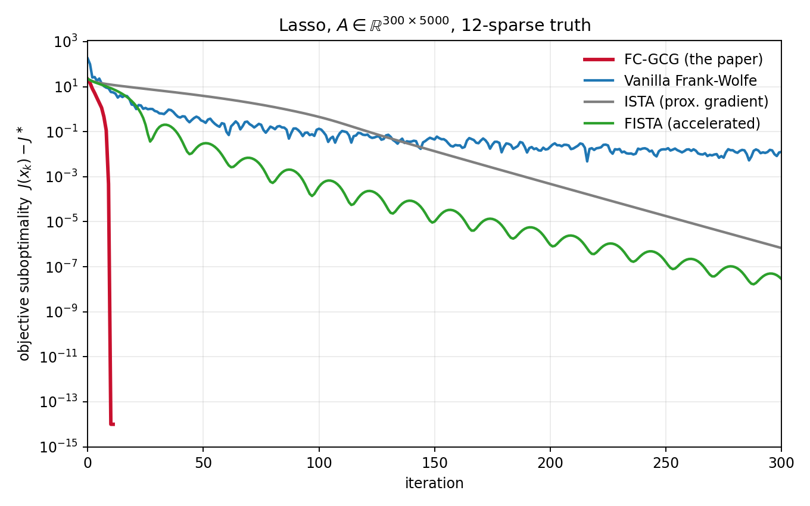
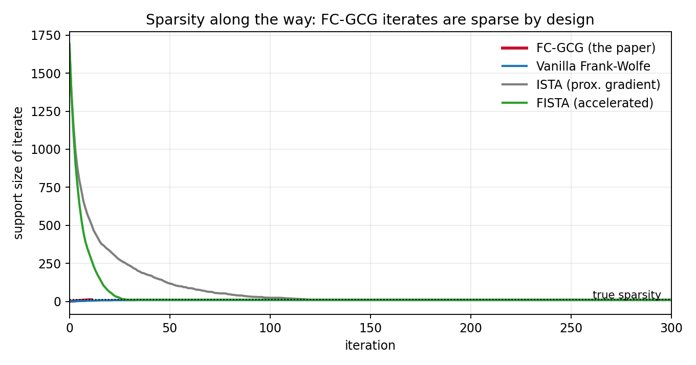
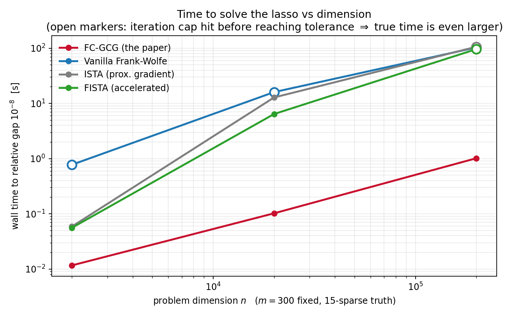

Sparsity by design: building solutions one atom at a time
A plain-language tour of our Mathematical Programming paper on fully-corrective generalized conditional gradient methods — with the whole idea worked out on the lasso, where you can see every moving part.
Optimisation
Sparsity by design: building solutions one atom at a time
A plain-language tour of our Mathematical Programming paper on fully-corrective generalized conditional gradient methods — with the whole idea worked out on the lasso, where you can see every moving part.
Can an optimisation method preserve sparsity throughout the computation and stop with an exact certificate?
FC-GCG alternates atom insertion with full correction over the active set, keeping every iterate sparse by construction.
In the pedagogical lasso experiment it inserts 11 atoms, stops at iteration 12 with an optimality certificate, and never exceeds the solution sparsity.
Companion post to Asymptotic linear convergence of fully-corrective generalized conditional gradient methods (Bredies, Carioni, Fanzon & Walter, Mathematical Programming, 2024 — open access). The linked Python repository is a pedagogical lasso implementation created to explain and test the paper’s ideas; it is not the original research code used to produce the theoretical paper. Code and experiments: github.com/sfanzon/sparse-gcg-paper-explainer.
The problem, without the Banach spaces
A huge amount of modern applied maths boils down to problems of the shape
\[\min_u \;\; \underbrace{F(Ku)}_{\text{fit the data}} \; + \; \underbrace{R(u)}_{\text{keep it simple}}\]
Reconstructing an MRI image from too few measurements, locating point sources from sensor data, training a sparse regression model — all instances. The regularizer \(R\) encodes a preference for simple solutions, and for a large family of regularizers “simple” means sparse: the solution is a combination of a handful of elementary building blocks, or atoms.
Here is the key geometric fact the paper is built on. The atoms are not arbitrary — they are the extremal points of the unit ball of \(R\): the “corners” of the ball, the points that cannot be written as averages of other points in it. And there’s a classical lemma that makes them algorithmically accessible: a linear function on a ball is always maximised at an extremal point. So if you can maximise linear functions over the ball — one cheap operation — you can discover atoms one at a time.
Our algorithm, FC-GCG (fully-corrective generalized conditional gradient), does exactly that, alternating two steps:
- Insertion. Look at the current residual, ask “which single atom correlates best with what’s still unexplained?” — a linear problem, solved at an extremal point — and add that atom to your working set.
- Full correction. Re-optimise the objective over combinations of only the atoms collected so far. This is a low-dimensional convex problem — cheap, because your working set is small — and it also discards atoms that turn out to be useless.
Two properties fall out immediately. Iterates are sparse at every iteration, by construction — sparsity is not something you converge towards, it’s the data structure. And the algorithm can stop with a certificate: if no atom correlates with the residual above the threshold set by \(R\), the optimality conditions hold exactly.
What the paper proves: the method always converges at the classical Frank–Wolfe rate \(O(1/k)\), and — this is the hard part, and the reason the paper is 68 pages — under a natural non-degeneracy condition on the dual variable, convergence is eventually linear: the error shrinks geometrically. The proof lifts the problem to a space where the atoms become coordinates, which is also a decent mental model for the algorithm itself.
The whole idea on one example: the lasso
Everything above lives in infinite-dimensional Banach spaces in the paper. But you can watch every gear turn in the most familiar sparse problem there is — the lasso in \(\mathbb{R}^n\):
\[\min_x \;\tfrac12 \lVert Ax - b\rVert^2 + \lambda \lVert x \rVert_1 .\]
The unit ball of \(\lVert\cdot\rVert_1\) is the cross-polytope, and its extremal points are simply the \(2n\) signed coordinate vectors \(\pm e_i\). So the abstract algorithm becomes something you could explain to a first-year student:
- Insertion: compute the correlations \(p = A^\top(b - Ax_k)\) of each column with the residual; pick the column with the largest \(|p_i|\). If \(\max_i |p_i| \le \lambda\): stop — you are exactly optimal.
- Full correction: solve the lasso restricted to the columns picked so far — a problem in 5, 10, 15 variables instead of \(n\) — and drop columns whose coefficient is zero.
If this reminds you of matching pursuit: yes — FC-GCG is the convex, certificate-carrying relative of greedy methods, and in the general Banach setting it’s the algorithmic engine behind “grid-free” approaches to inverse problems.
Racing it: FC-GCG vs Frank–Wolfe vs gradient descent
The natural baselines are vanilla Frank–Wolfe (same insertion oracle, but instead of re-optimising it just averages the new atom in with step size \(2/(k+2)\)) and proximal gradient descent (ISTA, plus its accelerated version FISTA) — the workhorse “gradient descent for sparse problems”. We race them on a lasso with \(A \in \mathbb{R}^{300\times 5000}\) and an 11-atom solution:

The qualitative gap is exactly what the theory predicts. Frank–Wolfe’s averaging step is what caps it at \(O(1/k)\) — it keeps diluting good atoms with step-size bookkeeping and zig-zags near the solution. ISTA converges linearly but slowly. FC-GCG does something the plot renders almost violent: one insertion per solution atom, then done, at machine precision — the “fully-corrective” step means an atom, once found, is used optimally forever.
There’s a second story in the support size of the iterates:

ISTA and FISTA wander through hundreds of nonzeros before settling; FC-GCG never holds more atoms than the answer needs. In \(\mathbb{R}^n\) that’s an aesthetic point. In the infinite-dimensional problems the paper actually targets, it’s the whole point — off a grid, a “dense iterate” doesn’t even exist, while “a list of a few atoms” is a perfectly good data structure.
Where it pays: high dimensions
All four methods pay the same \(O(mn)\) per iteration — one sweep of the data to compute a gradient or dual variable. So wall-clock time is decided by how many iterations you need, and FC-GCG’s count is essentially the number of atoms in the solution, independent of the ambient dimension:

At \(n = 200{,}000\) the difference is orders of magnitude — not because FC-GCG’s iterations are cheaper (they’re marginally more expensive — each includes a tiny inner solve), but because it takes ~15 of them where the baselines take thousands. Concretely, at \(n=200{,}000\): 1 second for FC-GCG versus 96–106 seconds for FW/ISTA/FISTA — with all three baselines still short of the target accuracy when their iteration caps hit. This is the regime the method was designed for: in our companion work on dynamic MRI, the “dimension” is a continuum — atoms are curves of moving point sources — and building solutions atom-by-atom is not an optimisation trick but the only viable representation.
Fine print, in fairness. The lasso instance here is deliberately easy — well-conditioned Gaussian designs satisfy the paper’s non-degeneracy assumptions comfortably, which is what makes the convergence so clean. And specialised lasso solvers (coordinate descent with screening rules) are also very fast on this problem; the comparison above is between general-purpose first-order schemes, which are the ones that generalise to the measure-space setting.
The three ideas worth stealing
Even if you never touch a Banach space, the design principles travel:
- Match your data structure to your prior. If you believe the answer is sparse, iterate over lists of atoms, not dense vectors.
- Certificates beat convergence. A stopping rule of the form “no atom correlates above \(\lambda\)” is an exact optimality proof, not a heuristic tolerance.
- Spend compute where it compounds. The fully-corrective step looks expensive per iteration but slashes the iteration count — the classic trade of a cheap outer loop for a smart inner one.
Paper (open access): doi:10.1007/s10107-023-01975-z · Code: github.com/sfanzon/sparse-gcg-paper-explainer
Citation and licence
If the paper or companion code is useful in your work, please cite the published article [1]. The maintained code is available at sfanzon/sparse-gcg-paper-explainer [2]. Code and data are released under CC BY-NC 4.0.
@article{2024-Bre-Car-Fan-Wal,
author = {Bredies, Kristian and Carioni, Marcello and Fanzon, Silvio and Walter, Daniel},
title = {Asymptotic linear convergence of Fully-Corrective Generalized Conditional Gradient methods},
journal = {Mathematical Programming},
volume = {205},
pages = {135--202},
year = {2024},
doi = {10.1007/s10107-023-01975-z}
}